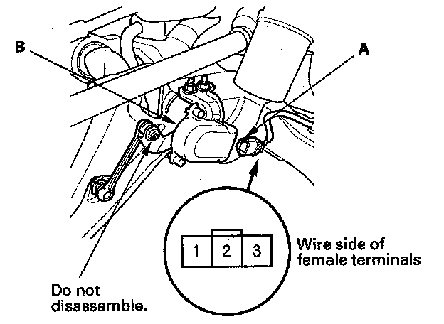
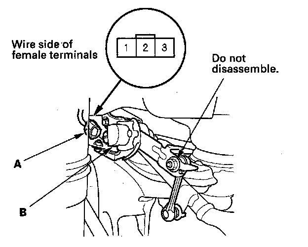
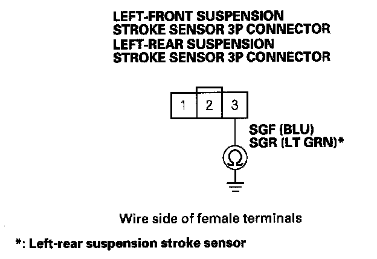
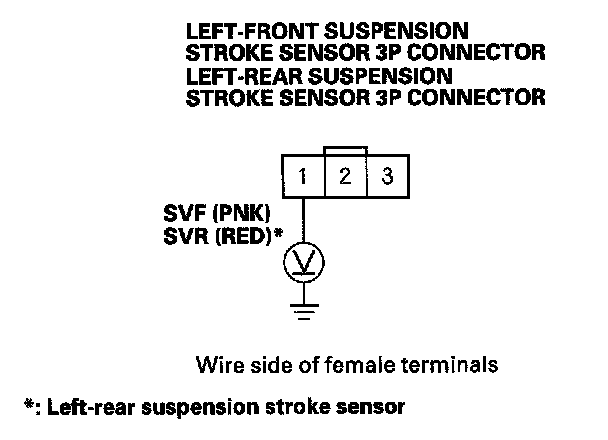
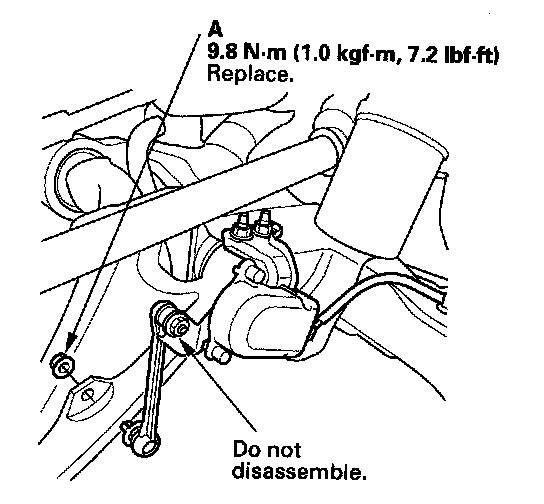
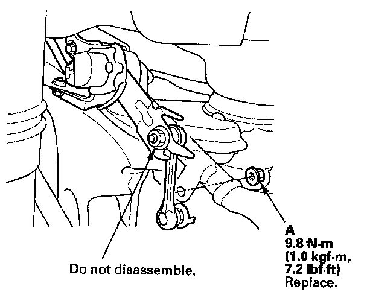
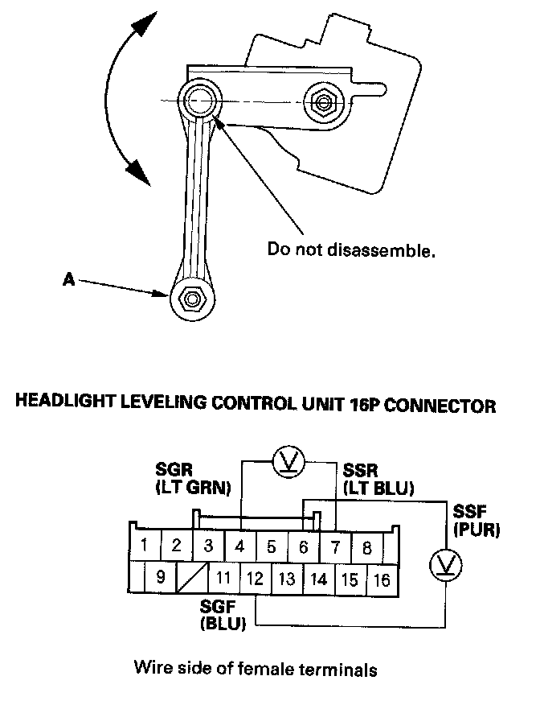

Suspension Stroke Sensor Circuit Troubleshooting
Suspension Stroke Sensor Circuit TroubleshootingNOTE: Before troubleshooting, check the No. 31 (15 A) fuse in the under-dash fuse/relay box. Check the active damper system for DTCs and troubleshoot those codes first.
1. Raise the vehicle, make sure it is securely supported.

2. Disconnect the 3P connector (A) from the left-front stroke sensor (B).

3. Disconnect the 3P connector (A) from the left-rear stroke sensor (B).
4. Turn the ignition switch ON (II).
5. Turn the combination light (headlight) switch ON.

6. Check for continuity between the left-front and left-rear suspension stroke sensors 3P connector No. 3 terminal and body ground individually.
Is there continuity?
YES - Go to step 7.
NO - Repair open in the wire or poor ground (G401), if the wire is OK, replace the headlight leveling control unit.

7. Measure the voltage between the left-front and left-rear suspension stroke sensor 3P connector No. 1 terminal and body ground individually.
Is there about 5 V?
YES - Go to step 8.
NO - Check for an open or a short in the wire between the headlight leveling control unit and the left-front (or left-rear) suspension stroke sensor. If the wire is OK, replace the left-front (or left-rear) suspension stroke sensor.

8. Remove the nut (A) and the left-front suspension stroke sensor from the suspension side.

9. Remove the nut (A) and the left-rear suspension stroke sensor from the suspension side.
10. Reconnect the 3P connector to the each suspension stroke sensor.

11. Measure the voltage between the headlight auto leveling control unit 16P connector No. 4 and No. 7 terminals, and No. 6 and No. 12 terminals while the suspension stroke sensor arm (A) is moved.
Is there about 0.5 - 4.5 V?
YES - Intermittent failure, the system is OK at this time. Check for loose or poor connection between the headlight leveling control unit and the left-front (or left-rear) suspension stroke sensor, if the connections are OK, replace the left-front (or left-rear) suspension stroke sensor.
NO - Check for an open or a short in the wire between the headlight leveling control unit and the left-front (or left-rear) suspension stroke sensor, if the wire is OK, replace the left-front (or left-rear) suspension stroke sensor.